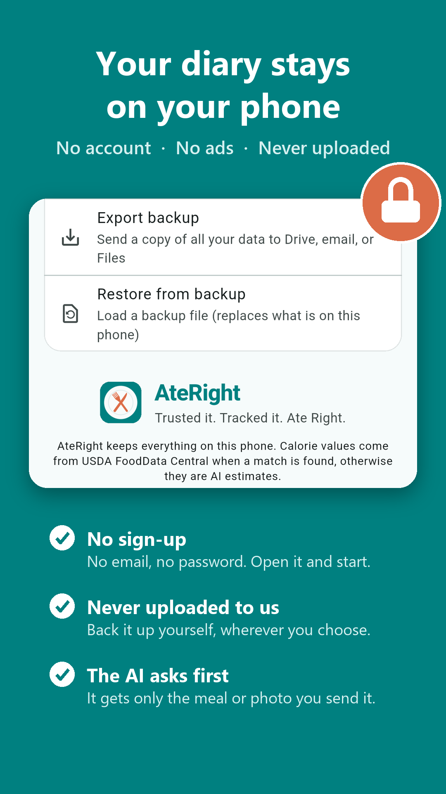
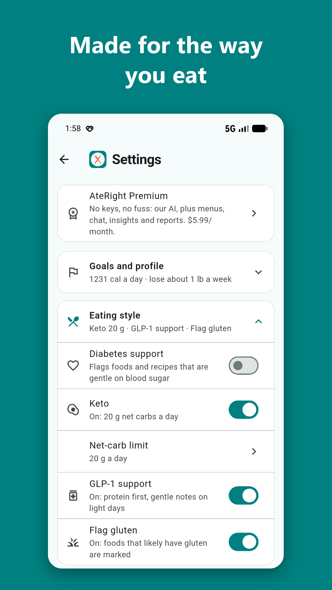
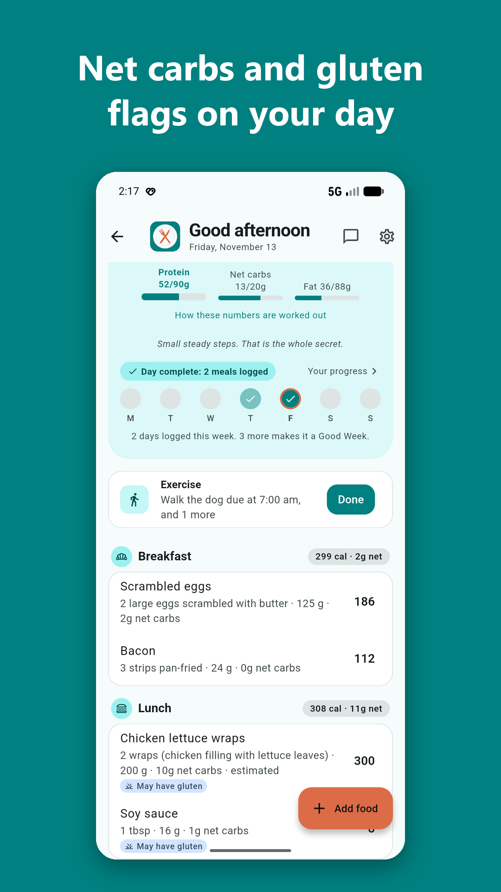
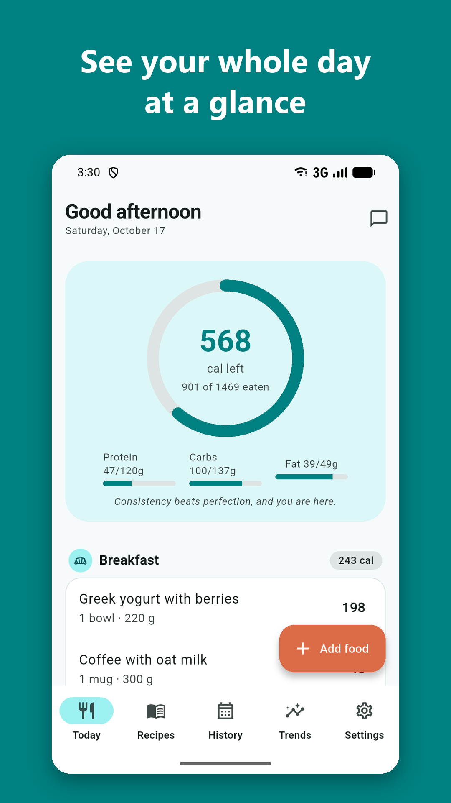
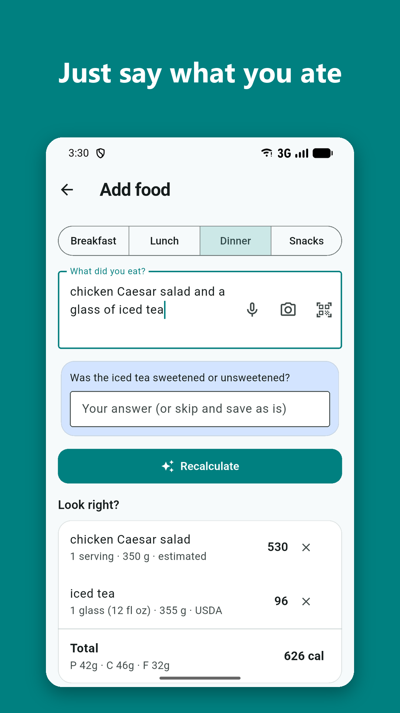
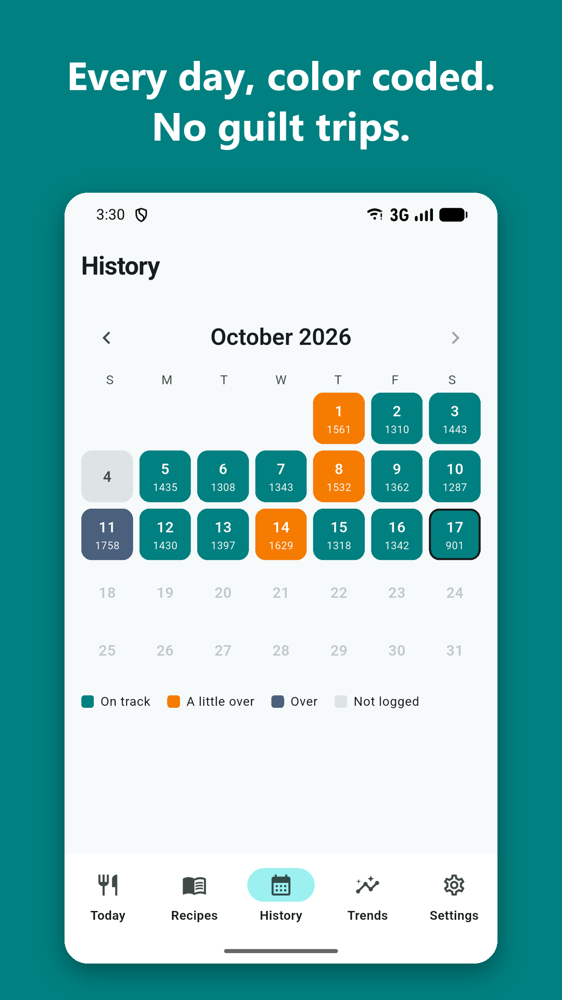
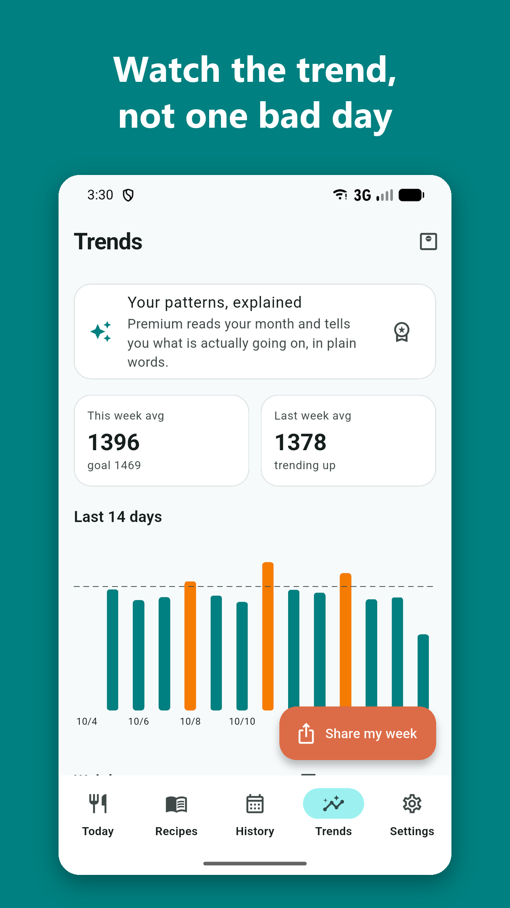
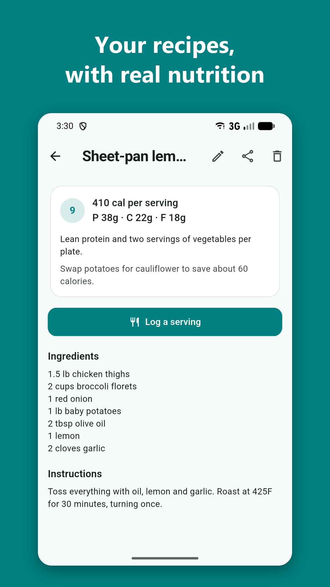

Writing about AteRight? Everything here is free to use. Questions, an interview, or something you don't see here? Get in touch.
AteRight is a calorie and nutrition tracker for Android and iPhone that logs a meal from one sentence, a photo or a barcode. Say "turkey sandwich and an apple" and its AI works out the foods, portions, calories and macros, checks everyday foods against the USDA's lab-measured database, and labels anything it estimates. There is no account, no ads and no tracking, and the food diary stays on the phone: the company never gets a copy, so it has nothing to sell. Eating styles for Diabetes, Keto (net carbs), GLP-1 support and gluten are built in and free. It starts with 35 free AI lookups, then works at no cost with the user's own free AI key, or with an optional Premium subscription. It is built to be kind: going over shows a calm orange and "One day over changes nothing," and progress comes from Good Weeks, not streaks. AteRight is made by CardRama, LLC.
| Name | AteRight (one word). Store name: AteRight: AI Calorie Counter |
| Tagline | Trusted it. Tracked it. Ate Right. |
| Maker | CardRama, LLC (United States) |
| Platforms | Android 8 or newer (Google Play); iPhone with iOS 17 or newer (App Store) |
| Price | Free download, no ads. 35 free AI lookups, then free with your own AI key. Optional Premium: $5.99 a month or $39.99 a year |
| Logging | Typed or spoken meals, meal photos, Nutrition Facts labels, barcodes, leftovers (before and after photos), saved restaurant menus |
| Nutrition data | USDA FoodData Central, Open Food Facts, printed labels, published chain menus |
| Privacy | No account, no ads, no tracking, and no data sold. The food diary stays on the phone; the company never gets a copy. The app asks before anything goes to an AI service and names it. Apple privacy label: Data Used to Track You, none |
| Eating styles | Diabetes support, Keto (net carbs, 20, 30 or 50 g a day), GLP-1 support (protein first), Flag gluten. All free |
| Press contact | admin@cardrama.gg |
| Links | ateright.com · Google Play · App Store |
No database digging and no weighing. Portions read the way people talk: "1 meat stick or 2?"
USDA lab data, printed labels and chain menus, each one labeled. Estimates say "estimated."
No account, no ads, no tracking. The diary stays on the phone, and the company never gets a copy.
Diabetes, Keto, GLP-1 and gluten-aware modes, free. Menu picks and recipe ideas follow them.
No red numbers and no broken streaks. Weekly averages matter more than any one day.
Tap any image for the full size.

Privacy: the diary stays on the phone

Eating styles: Diabetes, Keto, GLP-1, gluten

Keto net carbs and gluten flags

Today: calories left and macros

Add food: type, say, photo or barcode

History: every day, color coded

Trends and weight

Recipes with a health score
Need the logo? Download the app icon (1024 x 1024) or the banner (1024 x 500). Screenshots show a sample diary. Video walkthroughs of every feature are on the How to use it page.
AteRight gives information about food, not medical advice. Calorie figures from photos are estimates, and the app labels them that way. Please write the name as one word, AteRight, with a capital A and R.
Interviews, questions, fact checks, or other images: email us and we will get back to you.
Email admin@cardrama.ggNot press? For help with the app, use Support.